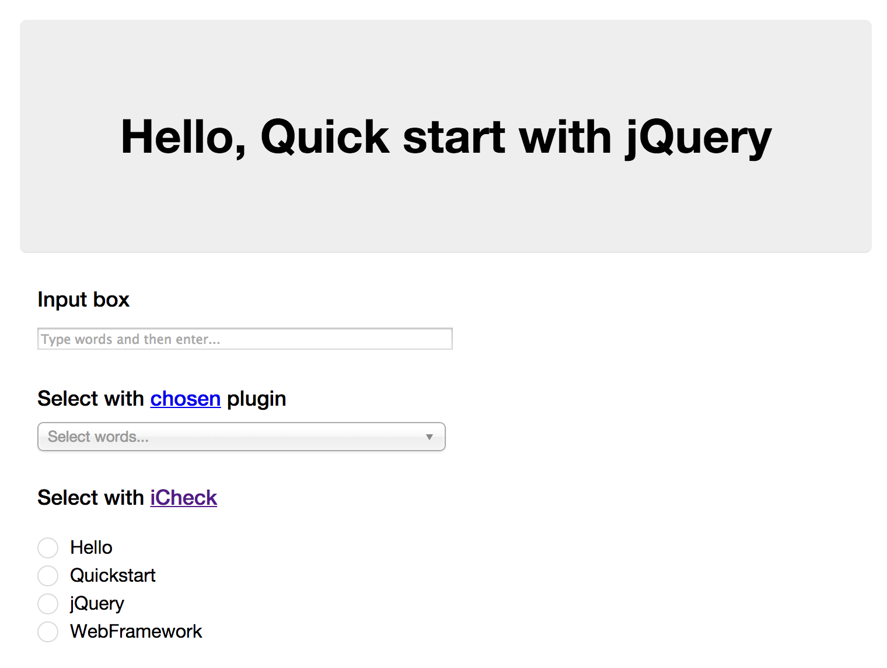
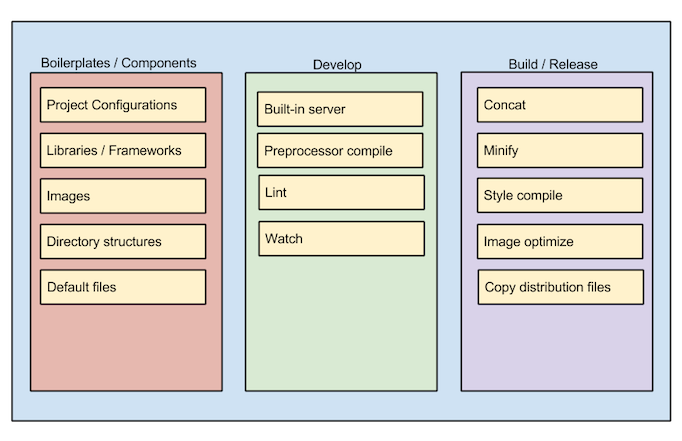

퀵스타트(Quick Start)
퀵스타트(Quick Start) 는 웹어플리케이션 개발에 사용되는 여러가지 프레임워크(Framework)를 쉽고 그리고 빠르게 시작할 수 있도록 도와주는 프로젝트입니다. 퀵스타트는 프레임워크를 사용하여 구현한 예제 코드와 웹어플리케이션에서 자주 사용되는 리소스, 환경파일 그리고 도구들로 이루어져 있습니다. 먼저 각 프레임워크와 라이브러리는 프로젝트별로 한개 또는 여러개가 복합적으로 사용될 수 있습니다. 각 프레임워크를 사용해서 만들어진 예제는 각 프레임워크의 기본적인 사용법을 보여줍니다. 웹개발에서 자주 사용되거나 이해가 하기 쉬운 형태의 예제 어플리케이션 구현을 목표로 했으며 각 프레임워크의 특징을 알 수 있도록 같은 예제 어플리케이션을 각각 웹프레임워크(Web Framework) 별로 구현 했습니다. 예제는 코드는 프레임워크에 익숙하지 않는 개발자가 쉽게 다가갈 수 있는 기회를 제공하고 프레임워크들을 심화 학습 할 수 있는 계기를 만들어 주는 좋은 시금석이 됩니다.

예제와 같이 제공되는 리소스, 환경파일과 웹어플리케이션 개발에 필요한 도구들은 현재 웹어플리케이션에서 개발에서 자주 사용되거나 많은 도움을 주는 도구들로 선정했습니다. 매 프로젝트마다 자주 사용되는 설정과 리소스들을 미리 준비해서 매번 번거롭고 단조로운 반복적인 작업을 하지 않도록 도와주고 간단한 명령으로 도구를 실행시키고 원하는 결과물을 빠르게 얻을 수 있도록 준비되어 있습니다.
웹어플리케이션 개발에 자주 사용되는 도구와 워크플로우(Workflow) 가 이미 내장되어 있어서 바로 웹어플리케이션을 구동해서 실행 결과를 바로 확인할 수 있습니다. 개발자는 제공된 퀵스타트 프로젝트를 분석하여 각 웹프레임워크의 구현방식과 동작을 공부할 수 있으며 퀵스타트 프로젝트를 기초로 자신만의 웹어플리케이션을 개발 할 수도 있습니다. 개발이 필요한 환경을 빠르게 구성할 수 있어서 개발자들이 자신의 아이디어를 자신이 사용하고 싶어하는 프레임워크를 사용해서 막힘없이 구현해 볼 수 있도록 도와줍니다.
퀵스타트 구성요소

Boilerplates / Components
프로젝트 생성시에 매번 작성하거나 준비해야 하는 작업을 미리 해둔 것입니다. 프로젝트서 사용하는 라이브러리나 프레임워크 파일은 물로 프로젝트 환경에 필요한 파일도 매번 만들거나 복사할 필요없도록 준비되어 있습니다.
- Project Configuration: 프로젝트 환경 설정 파일입니다. bower 나 npm 에서 사용하는 환경파일이 있습니다.
- Library / Frameworks: 퀵스타터 프로젝트에 사용되는 라이브러리와 프레임워크 관련 파일을 미리 포함하거나 패키지 매니저를 통해서 설치 할 수 있도록 준비되어 있습니다.
- Images: favicon 이나 심볼등 매번 사용되는 간단한 이미지들이 포함되어 있습니다.
- Directory structures: 퀵스타트 프로젝트를 이루는 디렉토리와 파일에 대한 지정된 이름과 경로를 가지고 있습니다. 일관되게 사용되는 이름과 경로를 사용해서 개발자들의 프로젝트 구성을 쉽게 알 수 있도록 도와줍니다.
- Default files: 위의 리스트외에 관습적으로 자주 사용되는 파일들을 선정해서 포함시킵니다. 에디터나 코드버전관리 도구에 사용되는 설정 파일이 있습니다.
Develop
개발 단계에서 사용되는 워크플로우를 지원합니다.
- Built-in serve: 내장 웹서버를 제공하여 바로 웹어플리케이션을 구동 시킬수 있으며 Watch 기능을 사용할 때에는 변경사항을 추적해서 프리뷰(Preview) 를 제공합니다.
- Preprocessor compile: SASS, Coffeescript 등을 사용하는 경우 컴파일을 할 수 있습니다.
- Lint: Javascript/CSS 파일에 문법 오류나, 스타일 가이드 오류를 사전에 리포팅해줍니다.
- Watch: 프로젝트파일의 변경 사항을 추적해서 변경시에 추가 작업을 할 수 있습니다.
Build
프로젝트에 사용되는 소스와 리소스를 컴파일 하거나 최적화 시키는 작업을 통해서 배포버전을 만드는 과정입니다. 빌드시에 필요한 워크플로우를 지원합니다.
- Concat: 소스파일을 병합하여 한개의 파일로 만들어 주는 기능을 제공합니다.
- Minify: 소스파일에서 불필요한 문자열이나 공백을 제거하고 압축하여 용량을 줄이는 기능을 제공합니다.
- Style compile: 스타일쉬트를 컴파일하거나 사용하지 않는 스타일을 제거할 수 있습니다.
- Image optimize: 이미지를 압축하여 용량을 줄입니다.
- Copy distribution files: 배포판에 필요한 파일들을 복사합니다.
준비물
Node.js
퀵스타트 프로젝트는 Node.js 를 기반으로 하는 다양한 도구를 사용합니다. 먼저 Node.js 설치하고 다음 명령을 통해서 버전을 확인합니다.
# node 는 v0.10.1 이상, npm 은 v1.4.x 를 권장합니다.
node --version && npm --version
Node.js 를 시스템에 설치하셨다면 이제 퀵스타터에서 사용되는 아래 도구들을 설치합니다.
gulp.js
gulp.js 는 이미 설치한 npm 을 통해서 설치하셔야 합니다. gulp.js 는 퀵스타터 프로젝트 사용시에 사용되는 도구로 여러가지 작업을 간단하게 사용할 수 있도록 도와주는 강력한 도구입니다. 더 자세한 설명은 Get started Grunt and Gulp 참고하세요.
Bower
Bower 는 웹앱 프로젝트에서 의존하고 있는 자바스크립트, 이미지 그리고 CSS 라이브러리를 효과적으로 관리 할 수 있는 패키지 매니저입니다. 퀵스타트에서는 Bower 를 사용하여 사용되는 프레임워크, 라이브러리를 설치하고 관련된 패키지의 버전과 의존성을 관리합니다.
각 퀵스타트 프로젝트에서 사용되는 프레임워크와 라이브러리 그리고 리소스들의 목록이 저장되어 있는 bower.json 는 이미 만들어져서 포함되어 있습니다. 퀵스타트 프로젝트를 압축을 푼 프로젝트 루트 경로에서 bower install 명령으로 필요한 파일을 간단하게 설치할 수 있습니다.
Bower 에 대해서 더 자세히 알고 싶으시면 Get started Bower 를 참고하세요.
퀵스타트 프로젝트 다운로드하기 (Download a Quickstart Project)
퀵스타트는 현재 아래 목록과 같은 프레임워크, 라이브러리별 프로젝트를 지원하고 있습니다. 최신 버전은 해당 github 저장소의 master 브랜치(branch) 이며 각 프로젝트별로 tag/release 된 버전을 다운받은후에 작업 경로에 압축을 푸시고 사용하시면 됩니다.
압축을 푼 다음 아래 명령을 사용해서 필요한 파일을 다운로드, 설치 합니다.
npm install && bower install
[MAYBE] 각 프레임워크 별로 로고로 이루어진 버튼으로 크게 표시 [TODO] 프로젝트명과 프레임워크 요소는 최종 결과물에 따라 변경 가능
퀵스타트 프로젝트 사용하기
퀵스타트 프로젝트 디렉토리 구조
압축을 풀고 필요한 파일, 라이브러리 그리고 도구들이 설치되었다면 퀵스타트 프로젝트는 아래와 같이 기본적인 디렉토리/파일 구조를 가지고 있습니다.
├── gulpfile.js: `gulp.js` 환경파일, 사용되는 명령이 정의
├── app
│ ├── images: 이미지파일이 있는 디렉토리
│ ├── scripts: Javascript 프로그램 파일 디렉토리
│ ├── styles: Style 파일 디렉토리
│ ├── favicon.ico
│ └── index.html
├── bower.json: bower 설정파일
├── bower_components: `bower install` 로 설치된 라이브러리,프레임워크
├── node_modules: `npm install` 로 설치된 node.js 모듈
├── package.json: 프로젝트에 사용되는 node.js 모듈 설정 파일
├── .jshintrc: jshint 에 사용되는 설정파일
├── .gitignore: git 에 사용되는 설정파일, untracked 할 파일 목록
├── .gitattributes: git 에 있는 디렉토리,파일단위로 별도의 설정을 위해 사용
└── .editorconfig: editorconfig 플러그인 설정, 프로젝트에 사용되는 에디터 설정
퀵스타트 워크플로우 명령들
퀵스타터에 사용되는 기본적인 개발 워크플로우 명령에 대해서 설명합니다. 퀵스타터에서 제공되는 명령은 모두 터미널 기반으로 gulp.js 를 사용하여 동작하도록 구성되어 있습니다. 각 명령들은 gulpfile.js 에 이미 구현되어 있으며 언제든지 개발자 스스로 자신만의 명령을 추가하거나 변경할 수 있습니다. 아래는 내장되어 있는 명령들에 대한 상세한 셜명입니다.
내장 서버(Built-in server) 구동하기
gulp-browser-sync 를 사용하여 내장 서버를 구동하고 특정 경로와 파일의 변경 사항을 감시해서 변경사항이 감시되면 열려진 브라우저 창을 자동으로 리로딩(Live-reload) 하는 프리뷰(Preview) 기능을 제공합니다.
gulp serve
Javascript 문법 검사하기
Javascript 파일의 문법 오류나 코딩스타일(Coding style, convention) 을 미리 검사해서 추후에 생기는 오류를 방지 할 수 있습니다. gulp jshint 를 하면 .jshint 파일에 선언된 조건에 따라 .js 파일을 검사하고 만약 이상이 감지되면 아래 같은 에러를 보여주게 됩니다.
/quickstart-jquery/app/scripts/main.js
line 1 col 13 Strings must use singlequote.
✖ 1 problem
[22:38:46] 'jshint' errored after 312 ms
[22:38:46] Error in plugin 'gulp-jshint'
아래 명령을 사용하여 검사합니다.
gulp jshint
프로젝트 빌드하기
퀵스타터에서는 개발버전으로 만들어진 웹어플리케이션을 배포가능할 형태로 빌드시켜주는 명령을 가지고 있습니다. gulp 명령을 빌드 과정을 시행하는 명령으로 아래와 같은 작업을 하게 됩니다. 작업된 파일은 별도의 경로 dist 에 모아지게 됩니다. 빌드 명령을 통해서 최적화 작업을 거친 웹어플리케이션은 개발버전 보다 향상된 퍼포먼스를 제공합니다.
- jshint: 빌드과정에서 문법 오류나 코딩스타일(Coding style, convention) 을 검사합니다.
- HTML minify, uglify: HTML 내에 사용되는 Javascript, CSS 파일등을 자동으로 인덱싱하여 minify, uglify 작업을 수행하여 최적화 작업을 수행합니다.
- Image optimizing: 이미지를 최적화하려 용량을 줄입니다.
- Distribution version: 최족화 되고 압축화 된 파일과 사용되는 리소스를 모아 배포버전을 만듭니다.
아래 명령으로 배포판을 빌드합니다 만들어진 결과물은 프로젝트 경로에 dist 디렉토리에 만들어 집니다.
gulp
아래 명령으로 배포판의 동작을 확인할 수 있습니다.
gulp serve:dist
프로젝트 빌드 파일 정리
빌드된 퀵스터터 프로젝트 파일을 제거합니다.
gulp clean
퀵스타터의 관리와 배포
퀵스타터 프로젝트 파일들은 github 에 공개되어 여러 개발자들로 부터 커밋을 받을 수 있는 형태로 제공됩니다. 개선할 점이나 보충할 내용은 여러 개발자들의 공헌 통해서 지속적인 버전업을 목표로 하고 있습니다. 또한 각 웹프레임워크별로 기본 형태의 버전에서 포크(fork) 하여 초급개발자 부터 중급개발자 버전으로 확장되어 개발 할 수 있도록 여러 버전을 제공하려고 하고 있습니다.
일정 수준으로 버전업이 된 파일은 github 에 tag 되어 tarball (압축파일) 형태로 고정된 url 을 통하여 릴리즈 됩니다. 저희는 개발자 여러분의 많은 참여를 바라고 있습니다.